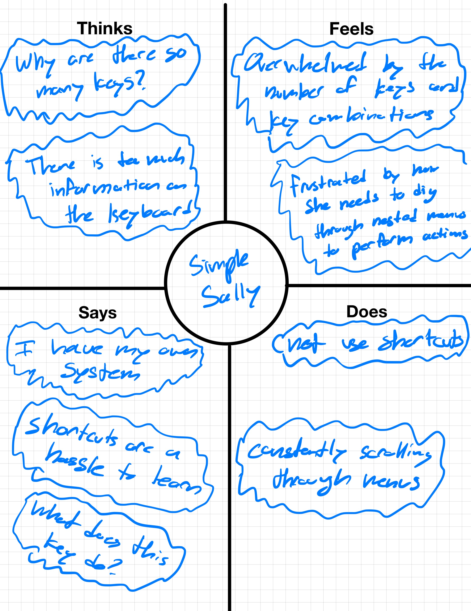
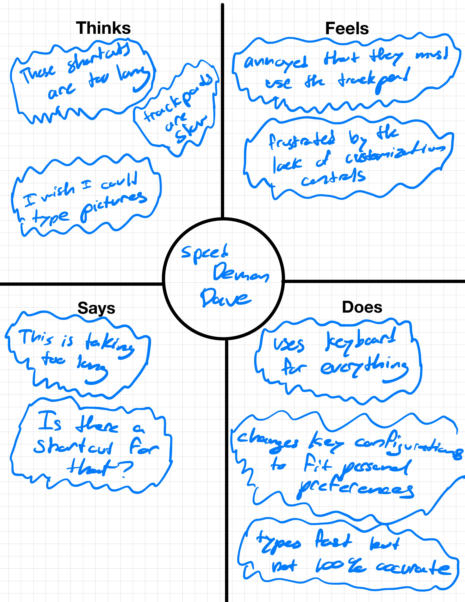
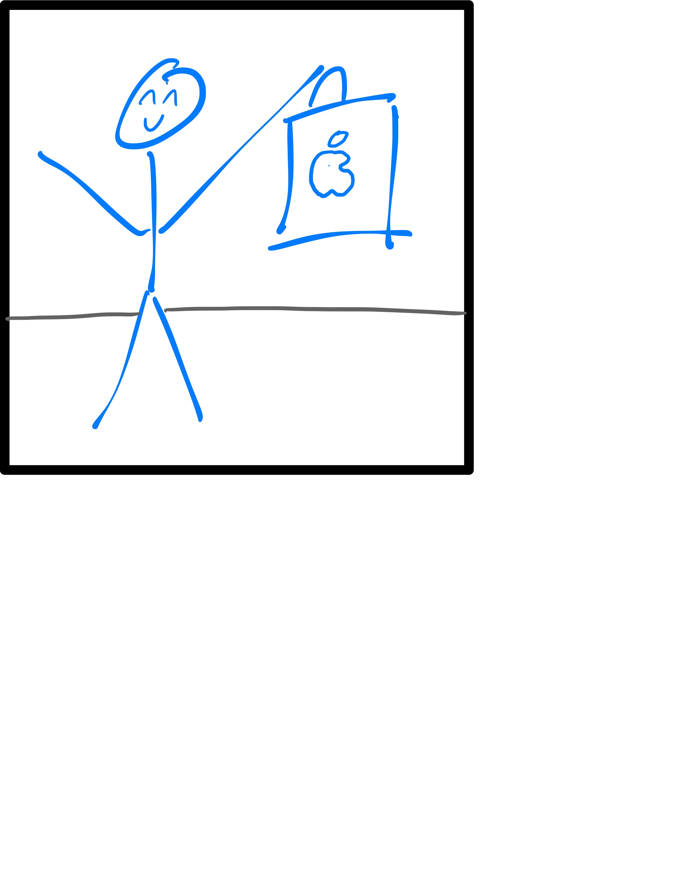
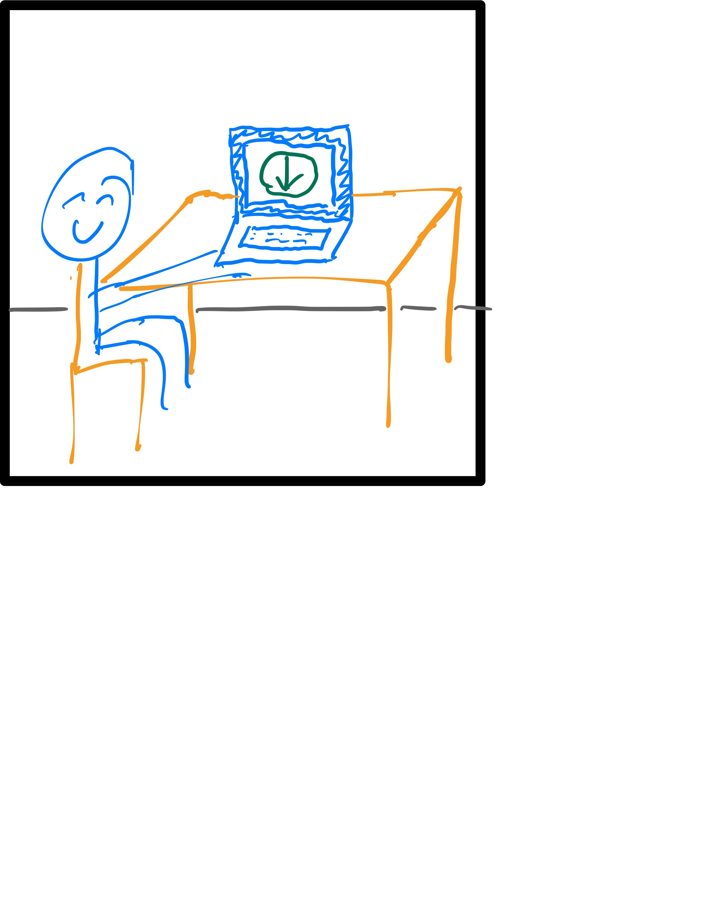
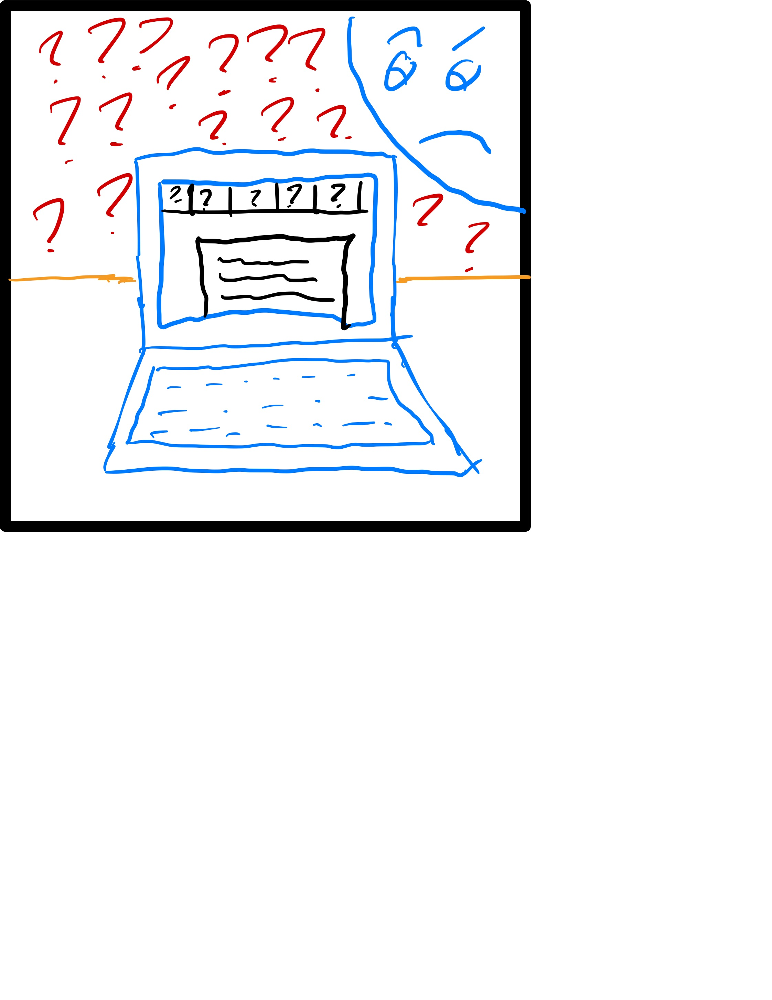
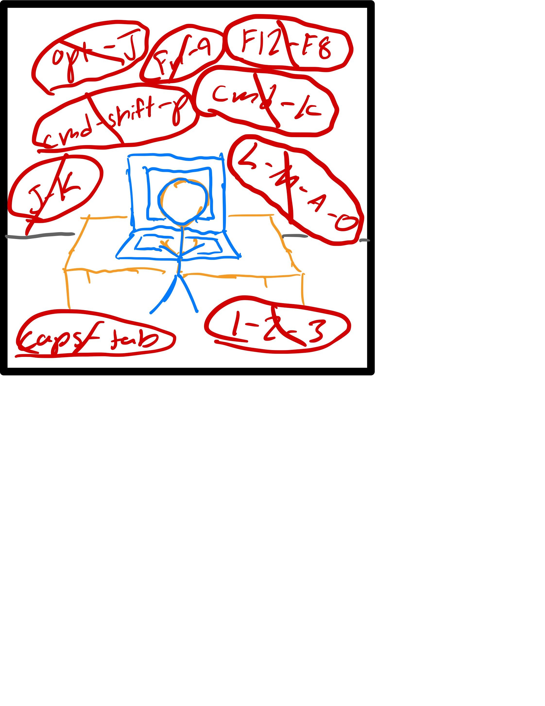
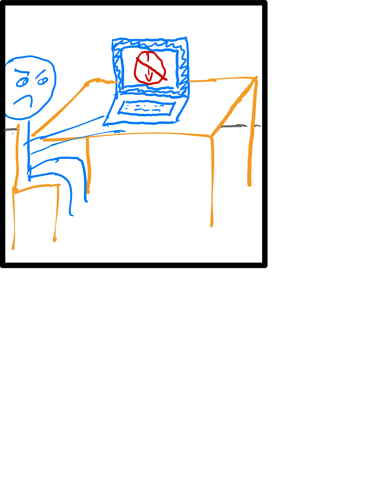
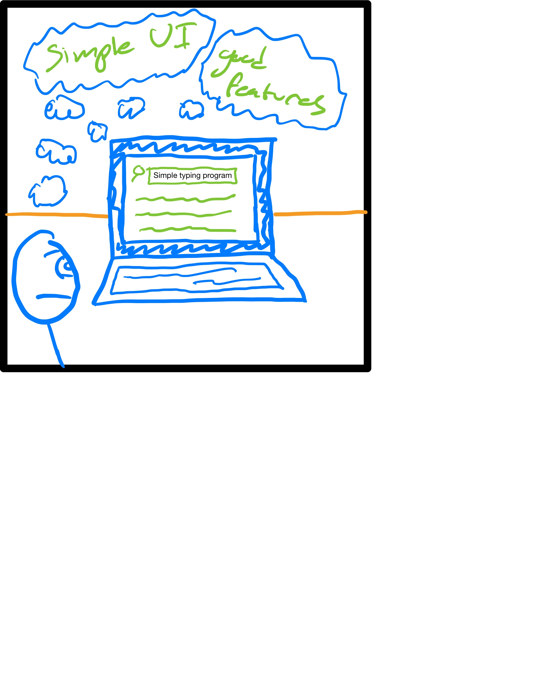
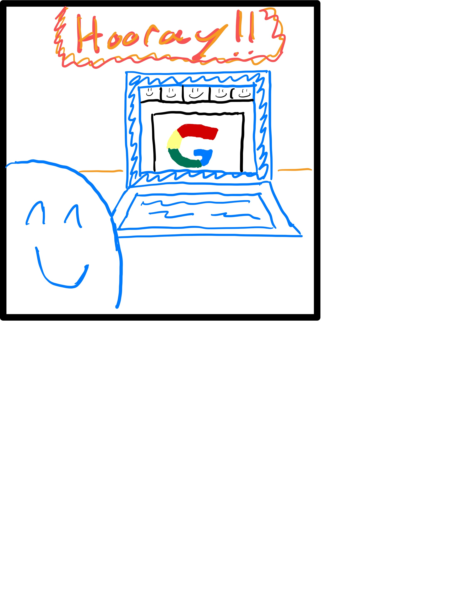

Introduction
Purpose
In this project, I observe real-word users interacting with an interface of my choosing and then, with my findings, create two personas and paring storyboards encapsulating the personalities and behaviors of the observed users.
The Interface: A Keyboard
The interface I chose for this project was the keyboard. Specifically, I chose to observe users only using the keyboards found on MacBook laptops. This has the benefits of a standard keyboard layout between users, as well as provide an abundance of potential users to observe.
The keyboard itself is made up of rows of keys (buttons) that can print text, to the screen, remove text from the screen and control other functions of the laptop such as changing the brightness of the screen or shutting down the computer altogether.
All of the keys have labels indicating their purpose. All of the keys are labeled to inform the user of the possible functionalities. The keys can be pressed individually to perform a function or can be pressed in combination with other keys.
Diagram of the Keyboard
Observations
I observed three users, all Brown students using their keyboards for different tasks
-
User 1
Computer Science
This user was programming. The programs they were using were VS Code and Google Chrome.
- This user made frequent user of keyboard shortcuts
- This user's function keys acted like a Windows computer. Meaning that F5 reloaded the web browser page and F12 brought up the browser development tools.
- This user never used the CMD, Option, or Shift keys on the right side of the keyboard.
- This user used keyboard shortcuts to achieve what most users will do with a track pad. This includes using a shortcut to select large blocks of text and a shortcut to change the active window between VS Code and Google Chrome.
-
User 2
Anthropology
This user was writing an essay. They were using Google Docs and Adobe Acrobat
- This user never used the CMD, Option, or Shift keys on the right side of the keyboard.
- This user did not use keyboard shortcuts. When they needed to change the font from normal to bold, select the text they needed to change and then click on the bold button on the top of page using the track pad.
- This user did not use the function keys.
-
User 3
International and Public Affairs
This user was taking notes. They were using Google Docs
- This user never used the CMD, Option, or Shift keys on the right side of the keyboard.
- This user typed fast but not accurately. There were many misspellings in their notes.
- This user never used the track pad.
- This user used (CMD + B) and (CMD + I) keyboard shortcuts to bold an italicized text.
- This user's function keys perform different actions than User 1. The keys did what was indicated on the label (change brightness, adjust volume, etc.)
- This user typed with two fingers.
Key Observations
- None of the users used the CMD, Option, or Shift keys on the right side of the keyboard.
- The function keys performed different actions between users.
- All users had unique typing styles.
Question Responses
1. When do you use the function keys on your keyboard, if at all?
- One user recently migrated to a MacBook from a Windows laptop and changed the default function key behavior in their settings to mimic the Windows behavior. Some of the changes include F5 being used to refresh the current browsing window and F12 bringing up the dev tools for the current browsing window.
- One user uses the default configuration for the function keys. They use the keys to change the screen brightness, adjust the volume, etc.
- One user does not use the function keys at all.
2. What do you think of the shift, command, and options keys on the right side of your keyboard?
- All users do not use these keys
- One user suggested that they be configured to some other functionality such as navigating to the last opened page in the current browsing window tab or return to the "New Tab" launch screen instead of having to open a new tab to get back to that screen.
- One user suggested that these keys instead be used to start and end different "work modes". When you press a key, a set of predefined applications would open that correspond to that mode, and all other widows would close.
- One user suggested that these keys be removed to simplify the keyboard.
3. Is there a character or a command that you feel like should have its own key?
- One user likes to differentiate between text and code in their notes by changing fonts. This user suggested that there be a key that allows for a quick change between two fonts when typing.
- One user wished that there was a key, or that they could set an existing key, to open a blank note in their favorite note taking app so they spend less time opening the application.
- One user wished that there was a key that brought up a list of different characters from other alphabets so they could more easily insert these characters into their documents.
Personas
From the user observations, I have devised two personas: Simple Sally and Speed Demon Dave
Simple Sally
Simple Sally does not want to overwhelm herself learning the shortcuts for all of the applications she uses. In all possible cases, this user performs actions using GUIs provided by the application.
Sally faces the issues of an overly-complicated keyboard for her purposes. She finds little use for right-side option, command, shift keys, and function keys. Consequently, Sally feels that the keyboard would be better off without them.
Sally is based on User 2. Like Sally, User 2 does not use the functions keys or the right-side command, option, or shift keys. Also like Sally, User 2 felt like the keyboard layout could be simplified to remove keys that they believe are rarely used.
Speed Demon Dave
Speed Demon Dave does not want to waste time shuffling through GUI menus. He learns every shortcut and keybinding so he can maximize his output.
Dave is based on User 1 and User 3. Like User 1, Dave uses may keyboard shortcuts that most users might not even know about. Such as CMD + TAB to change the active application. Also like how User 1 changed their function keys, Dave configures the keys on his keyboard to fit his personal workflow.
Like User 3, Dave does not use the track pad, preferring to do as much as possible on the keyboard. Also like User 3, Dave is fast but not 100% accurate. He would like there to be a way to bind a key, perhaps one of the right-side command, option, or shift keys, to some behavior that might increase his accuracy.
Storyboard
This is my final storyboard for Simple Sally persona.
-

After 5 years of waiting, Sally has just bought her new MacBook laptop!
-

She has heard great things about this new word processor program. Sally downloads the program in hopes to boost her productivity.
-

Sally has a hard time understand the word processor. The GUI is more complicated than she expected, and she doesn't know any shortcuts.
-

She tries pressing different combinations of keys, hoping to get the behavior she desires. Sally is unsuccessful.
-

Sally tries downloading the word processor she used on her old laptop, but that software is too old for her new laptop.
-

Sally scours the internet looking for a simpler alternative that she can use to type.
-

Sally finds Google Docs, the perfect solution.